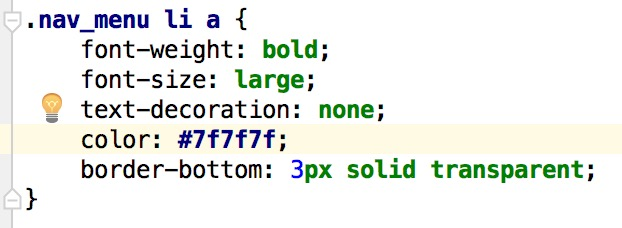
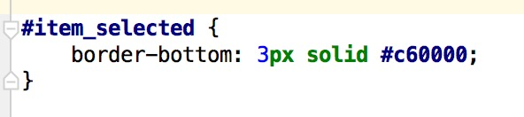

前端技术分享 03/19/2016
by wingson
Web前端的延迟主要来自两个方面：网络传输时延和浏览器渲染时延，网络传输时延主要决定于网络性能， 而浏览器渲染时延则可以从CSS优化上下工夫。
CSS有一个基础属性，继承，就是父级元素的一些属性能够传递到子代身上，CSS叫做层叠样式表， 它的一个很重要的特性就是“层叠”，要明确一点“层叠 !=继承”。所谓继承，就是指父元素的规则也会适用于子元素， 比如给body设置color: red;那么如果其内部元素没有其他的规则设置，也都会变成红色。而所谓层叠， 即文档中一个元素可能被多个CSS选择器选中，每个选择器都有一些CSS规则，这些规则有可能是不矛盾的，则这些规则会同时生效。
为了提高代码质量就要理解层叠，由它来活用继承，比如padding: 0;我们在大多数元素中都会用到，所以可以写在body里， 尽可能让所有需要padding: 0; 的元素都继承到它，这样就不用每次遇到一个新的div都再补一个padding: 0; 不需要的元素， 属性不通用，单独写属性。
要活用继承，就要在开发者模式中研究那一个个样式的优先级。在浏览器开发者模式中看到的元素样式从上到下， 最优先的是层叠，其次比较特殊性，特殊性相同则后定义的优先。
优先级：层叠 > 特殊性 >后定义
层叠优先级如下：
!important用户样式 > !important作者样式 > 作者样式 > 用户样式 > 浏览器样式
如果层叠优先级相同，比较不出谁优先，那就比较特殊性，所谓特殊性，有4个权值 a b c d，可以这样理解：
a 权值1000，指行内元素；
b 权值100，指id选择器；
c 权值10，指类选择器、伪类选择器；
d 权值1，指标签选择器、属性选择器；
行内样式，就是指内联样式比如<div style="......">...</div>这种，像div.content这种选择器，
权值为11；特殊性的值越大越优先。
举一个具体的例子:
在这个页面中,顶部导航menu上的menuItem,在处于当前页面时会有选中效果
样式如下:

MenuItem样式

MenuItem设定选中时的样式
此时,menuItem默认的样式特殊性为12,而在选中样式使用类选择器时,特殊性为10,所以样式无法生效, 在将其变为id选择器后,特殊性变为100,所以样式可以生效.
首先应该尽量避免使用通配符 * ；这会让浏览器渲染时遍历所有节点。然后避免后代选择器比如 div div p .look这样的。 以这个选择器为例，浏览器会先找到拥有类look的元素，然后查询父级中是否有p，无则放弃样式， 有则继续查询父级直至完全符合才会采用样式，如果直接使用.look就可以直接确定想渲染的元素。所以, 请不要多次一句去写后代选择器。